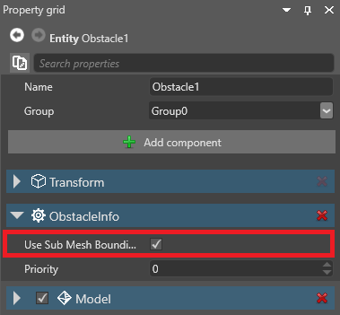

Public properties and fields
Beginner Programmer
When you declare a public property or field in a script, the property becomes accessible in Game Studio from the script component properties.

You can attach the same script to multiple entities and set different property values on each entity.
Note
Properties and fields must be serializable to be used in Game Studio.
Add a public property or field
This script has a public property (DelayTimeOut):
public class SampleSyncScript : StartupScript
{
// This public member will appear in Game Studio
public float DelayTimeOut { get; set; }
}
Game Studio shows the DelayTimeOut property in the script component properties:

Note
As a general rule, if you want to display the property or field in Game Studio, getters and setters should do as little as possible. For example, they shouldn't try to call methods or access Stride runtime API.
For example, the following code will create problems, as it tries to access Entity.Components, which is only available at runtime:
public class SampleSyncScript : StartupScript
{
private float delayTimeOut;
// This public member will appear in Game Studio
public float DelayTimeOut
{
get { return delayTimeOut; }
set
{
delayTimeOut = value;
Entity.Components.Add(new SkyboxComponent());
}
}
}
If you want to include code like this in a property or field, hide it so Game Studio doesn't display it (see below).
Hide properties or fields in the Property Grid
If you don't want Game Studio to show a property in the Property Grid, you can:
- declare your member internal or private, or
- use the DataMemberIgnore attribute like this:
// This public property isn't available in Game Studio
[DataMemberIgnore]
public float DelayTimeOut { get; set; }
Game Studio no longer shows the property:
Adding property descriptions
When you add a <userdoc> comment block above your public property in code, Game Studio will display it in the description field.
///<summary>
/// This summary won't show in Game Studio
///</summary>
///<userdoc>
/// This description will show in Game Studio
///</userdoc>
public float DelayTimeOut { get; set; }
Enable documentation file generation:
<PropertyGroup>
<TargetFrameworks>net6.0</TargetFrameworks>
<DocumentationFile>bin\$(Configuration)\$(TargetFramework)\$(AssemblyName).xml</DocumentationFile>
</PropertyGroup>
Note
Game Studio will only look in your build output directory for each assembly. Using the above path is recommended.
On next reload, the Game Studio should display the documentation:
MemberRequiredAttribute
The MemberRequiredAttribute is used to specify if a field or property should not be left null in the editor. If no values are set for this member, a warning or error will be logged when building your game.
[Stride.Core.Annotations.MemberRequired(MemberRequiredReportType.Error)] public CharacterComponent MyCharacter;
Additional Serialization Attributes
DataMemberRangeAttributeInlinePropertyAttributeItemCanBeNullAttributeItemNotNullAttributeMemberCollectionAttributeDataStyleAttributeDisplayAttribute